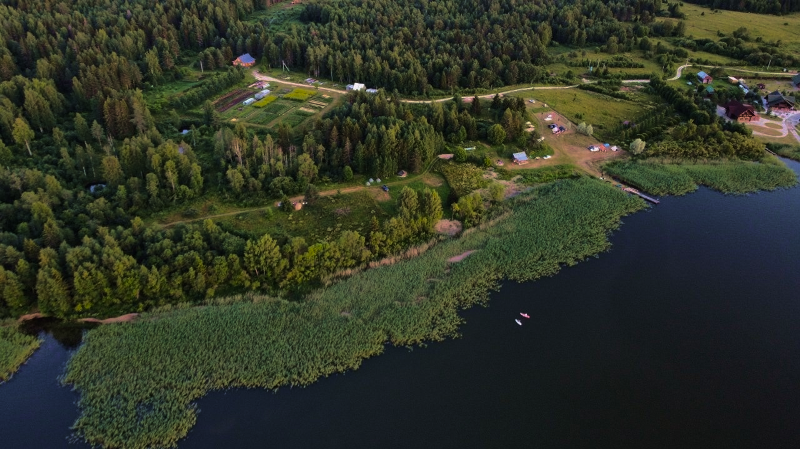
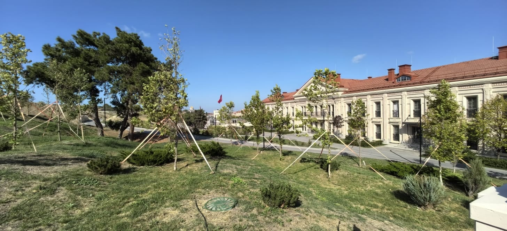

Проект Сады Севера
Идея Коллекционного сада принадлежит кандидату с/х наук Ослопову Алексею
Анатольевичу, который говорит:
«В своё время, с 1960 по 1972год, я работал завучем по
производственному обучению в Городищенскои средней школе Нюксеницкого района Вологодской области и
был заведующим пришкольным участком, морозы тогда достигали -49 градусов по Цельсию и вымерзали даже
такие сибирские сорта, как Ранетка пурпурная.
В то время и подумать было нельзя о том, что
стало
возможным сегодня! Изменился климат. Вслед за этими изменениями двинулись на Север и южные сорта
яблонь, груш, сливы, вишни и даже абрикоса. И сейчас в наших садах не редкость сорта, которые раньше
можно было встретить только на полосе Орла, Липецка и южнее с плодами не уступающими плодам в
магазине».
Цели и задачи
Цели:
Целью Коллекционного сада является испытание сортов и видов плодовых и декоративных растений, пригодных для почвенно-климатических условий Русского севера.
Обзор проекта:
Коллекционный сад состоит из: яблоневого сада, который насчитывает 200 сортов яблони,
грушевого
сада, 40 сортов, сливового сада, 30 сортов, вишнёвого сада, 20 сортов, абрикосового сада, 40
сортов и сортообразцов;
А также включает в себя: 30 сортов смородины, 25 сортов жимолости, 10 сортов крыжовника, 30
сортов клубники, 15 малины, 5 сладкоплодной калины, 5 ореха, 10 рябины и 90 сортов и видов
декоративных растений.
В основу коллекционного сада вошла коллекция сортов Ослопова Алексея Анатольевича, Железова
Валерия Константиновича, создателя уникального сада в Сибири, Дышлюк Надежды Васильевны и
Сергея
Петровича из Майского, Параничева Генриха Львовича из п.Горицы Кирилловского района,
Мичуринского сада г. Москвы, Орловского института селекции, а также сорта, переданные
другими
участниками нашего проекта.
Локация
Кирилловский район
Сроки
Март 2024 - Декабрь 2025
Бенефициары
200 участников
Статус
Активный
Галерея проекта






Активные проекты
Проекты, реализуемые прямо сейчас в различных районах
Вологодской области

г.Кириллов
Проект "Сады Севера"
Охрана окружающей среды, развитие экологического сельского хозяйства, благоустройство
Актвный проект
Подробнее
г.Вологда
Проект "Матери и дети Победы"
Охрана окружающей среды, развитие экологического сельского хозяйства, благоустройство
15.03.2024 - 15.09.2024
Подробнее
Вологда
Проект «Деревня – душа России»
Восстановление и сохранение духовно-нравственных ценностей традиционной народной культуры Севера России.
15.03.2024 - 15.09.2024
ПодробнееКак помочь фонду?
Вы можете внести вклад в развитие малых городов и сёл
Вологодской области

Финансовая помощь
Прямое пожертвование на конкретные проекты или общую деятельность фонда
Поддержать
Стать партнёром
Для бизнеса и организаций: ресурсная, экспертная или организационная поддержка
Стать партнёром